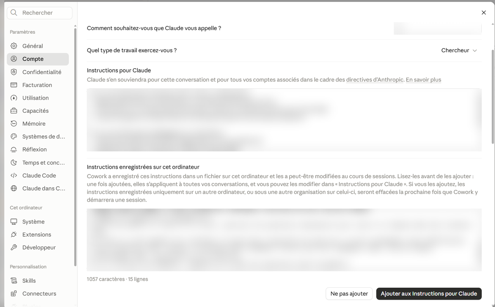

Apprendre à Claude qui tu es, une seule fois
Environ quinze minutes pour que Claude parle de tes classes, de ta discipline et de ta façon d'enseigner, et qu'il cesse de deviner.
Avant de commencer
Tu vas remplir un seul réglage, « Instructions pour Claude ». Claude le relit au début de chaque conversation, sans que tu aies à te répéter.
Prépare, sur une feuille ou dans ta tête :
- ta ou tes disciplines, tes degrés (S1 à S6) et la filière ;
- ce qui rend ton école particulière ;
- les outils numériques de ta classe et tes manuels ;
- ta façon d'enseigner, en deux ou trois phrases.
Les écrans de ce guide ont été capturés le 2026-10-16 sur Windows, dans l'application Claude de bureau. La procédure complète n'a pas encore été testée avec des enseignants. Sur Mac, la touche Cmd remplace Ctrl ; les écrans Mac, tablette et téléphone n'ont pas été vérifiés. L'écran du site claude.ai est le même pour ces réglages. Si ton écran est différent, passe par la recherche des Paramètres (voir « Si ça ne marche pas »).
La même demande, deux réponses
Voici ce que change le modèle de ce guide. La même demande a été posée deux fois à Claude, dans une conversation privée de claude.ai : d'abord sans aucune instruction, puis avec le modèle primaire rempli avec des données fictives (Camille, titulaire de P3 à Herstal).
L'exemple est pris en P3 pour montrer le mécanisme. Avec ton modèle secondaire rempli, Claude s'appuie de la même façon sur tes classes, ta discipline et tes outils.
Durée : une séance de 50 minutes.
À produire : le déroulement de la séance avec le minutage, la consigne que je lirai aux élèves, et une trace écrite de trois lignes.
Contrainte : une seule feuille, imprimable en noir et blanc.
Voir les instructions utilisées pour le cas « avec »
# Qui je suis Je suis Camille, titulaire de P3 à l'école communale de Herstal, en Fédération Wallonie-Bruxelles. # Mes élèves (anonymisé) 21 élèves. Profil : 4 élèves lisent en dessous du niveau P2, 3 élèves allophones arrivés cette année, 1 élève avec un PIA pour dyslexie, 2 élèves rapides qui s'ennuient. Je ne donne jamais de noms : je parle d'« un élève » ou d'un code. # Mon école école de quartier, peu de familles parlent français à la maison, une seule classe de P3 pour toute l'école, peu de budget pour le matériel # Mes outils et mes manuels Outils numériques à disposition : un TBI dans la classe, 8 tablettes partagées entre 3 classes, pas d'ordinateur par élève. Manuels : les fiches de la méthode de maths de l'école ; pas de manuel de lecture. # Ma pédagogie j'enseigne par ateliers autonomes selon les besoins, la manipulation avant l'abstraction, l'oral avant l'écrit ; mes consignes tiennent en trois actions au maximum # Cadre Socles de compétences et référentiels de la FWB. Vocabulaire et exemples belges uniquement. # Règle absolue : ne rien deviner Si une information utile ne figure ni ici ni dans ma demande, ne la devine pas. Soit tu me poses la question avant de répondre. Soit tu écris en première ligne « Hypothèses (non données par moi) : » et tu les listes, une par ligne. Ne présente jamais une hypothèse comme un fait.
Ce qui change
- Les hypothèses. Sans instructions, Claude suppose un seul point (le niveau, « P3-P4 »). Avec, il liste cinq hypothèses étiquetées « (non données par moi) » que tu corriges d'un coup d'œil.
- Ta classe. Avec, la séance prévoit trois ateliers (élèves sous le niveau P2 et allophones, reste de la classe, deux élèves rapides) et une consigne lue à voix haute pour l'élève avec PIA. Sans, une seule séquence identique pour tous.
- Tes outils. Avec, le TBI sert à la mise en commun et le matériel reste en papier. Sans, aucun outil numérique n'est utilisé.
- Ta pédagogie. Avec, la consigne tient en trois actions courtes, comme demandé dans les instructions. Sans, c'est un bloc de sept phrases.
- Le ton. Avec, Claude te tutoie, comme dans tes instructions. Sans, il te vouvoie.
Réponse sans instructions, texte intégral
Hypothèse : je suis parti d’une classe de P3-P4 (3e-4e primaire). Si c’est un autre niveau, dites-le-moi et j’ajuste.
Matériel : 3 bandes de papier identiques par élève (même longueur, ex. 20 cm), un crayon, des ciseaux en secours. Tout se travaille au crayon par hachures, donc aucun problème en noir et blanc.
Déroulement (50 min)
| Min | Phase | Ce que font les élèves | Ce que fait l’enseignant |
|---|---|---|---|
| 0-5 | Situation-problème | Prédisent : « Léa mange 1/2 d’une barre, Noah mange 2/4 de la même barre. Qui a le plus mangé ? » Vote à main levée | Dessine une barre au tableau, note les votes sans valider |
| 5-10 | Consigne | Écoutent, reçoivent le matériel | Lit la consigne (ci-dessous) |
| 10-25 | Manipulation | Bande 1 : pliée en 2, 1 part hachurée. Bande 2 : pliée en 4, 2 parts hachurées. Bande 3 : pliée en 8, 4 parts hachurées | Circule, relance : « Que remarques-tu quand tu poses les bandes l’une sur l’autre ? » |
| 25-35 | Mise en commun | Superposent, comparent, reformulent oralement | Fait venir 2 élèves au tableau, fait dire : « la longueur hachurée est la même » |
| 35-45 | Entraînement | Au dos de la feuille : compléter 1/2 = ?/4, 1/2 = ?/6, 1/2 = ?/8 sur des barres dessinées. Question piège : « 2/4 est plus grand car 4 > 2 : vrai ou faux ? » | Repère l’erreur « plus grand dénominateur = plus grand » et la fait discuter |
| 45-50 | Trace écrite | Recopient, puis reviennent sur leur vote du début | Dicte la trace, demande qui avait changé d’avis |
Consigne à lire aux élèves
« Vous avez trois bandes de papier exactement de la même longueur. Sur la première, pliez en 2 parts égales et hachurez 1 part. Sur la deuxième, pliez en 4 parts égales et hachurez 2 parts. Sur la troisième, pliez en 8 parts égales et hachurez 4 parts. Ensuite, posez vos bandes l’une sur l’autre, bord contre bord. Regardez la partie hachurée de chaque bande : qu’est-ce que vous remarquez ? Écrivez votre réponse en une phrase. »
Trace écrite (3 lignes)
Une même quantité peut s’écrire avec des fractions différentes.
1/2 = 2/4 = 4/8 : le tout est coupé en parts plus petites, mais on en prend davantage.
Pour comparer des fractions, on regarde la part hachurée, pas seulement les chiffres.
Conseil de mise en page : une feuille A4 recto, avec le tableau en haut et la consigne et la trace écrite en bas, tient sans problème en police 11. Je peux vous la mettre en forme dans un document prêt à imprimer si vous voulez.
Réponse avec instructions, texte intégral
Hypothèses (non données par moi) :
Les élèves connaissent déjà « partager en parts égales » et le mot « moitié ».
Tu disposes de feuilles A4 de brouillon et de crayons de couleur ou de feutres.
Tu es seule adulte dans la classe pendant la séance.
La feuille est pour toi (déroulement, consigne, trace), pas une fiche à distribuer aux élèves.
Tu n’as pas encore utilisé la fiche de la méthode sur ce sujet.
1/2 = 2/4 : même quantité (P3, 50 min)
Matériel (budget nul) : 3 bandes de papier par élève (A4 coupée dans la longueur, même longueur pour tous), crayons de couleur en noir et blanc ou gris, TBI pour la mise en commun.
Déroulement
| Min | Phase | Ce que font les élèves | Ce que tu fais |
|---|---|---|---|
| 0-5 | Oral | Partagent une « tarte » (dessinée au TBI) entre 2 puis entre 4. Disent « un demi », « un quart ». | Fais répéter en chœur, puis en duo. Mots écrits au TBI avec dessin. |
| 5-15 | Manipulation | Suivent la consigne ci-dessous avec les bandes A et B. Comparent. | Circule, ne dis pas la réponse : « Que vois-tu ? Dis-le à ton voisin. » |
| 15-35 | Ateliers autonomes (3 groupes) | Voir ci-dessous. | Reste d’abord 10 min à l’atelier 1, puis passe aux autres. |
| 35-43 | Mise en commun (TBI) | Un élève superpose ses bandes devant la classe. Tous disent « 1/2 égale 2/4 ». | Fais verbaliser : « Pourquoi c’est pareil ? » |
| 43-48 | Trace écrite | Recopient ou collent les 3 lignes. | Lis les lignes à voix haute avant qu’ils écrivent. |
| 48-50 | Bilan oral | Pouce levé, à plat ou baissé : « Je peux l’expliquer à un camarade. » | Note les pouces baissés pour la prochaine séance. |
Ateliers (15-35)
- Atelier 1 (accompagné) : élèves lisant sous le niveau P2 et élèves allophones. Bandes déjà pliées, pictogrammes des consignes. Ils superposent et disent la phrase modèle : « Un demi, c’est comme deux quarts. »
- Atelier 2 (autonome) : le reste de la classe. Plier une bande en 2, une bande en 4, et colorier pour montrer 1/2 et 2/4. Dessiner ensuite leur preuve dans le cahier.
- Atelier 3 (défi) : les 2 élèves rapides. Plier une bande en 8 et chercher d’autres écritures de la même quantité (1/2 = ?/8). Ils préparent une preuve à montrer à la classe.
L’élève avec PIA (dyslexie) peut rejoindre n’importe quel atelier. Dans tous les cas, la consigne lui est lue à voix haute et il présente sa preuve à l’oral plutôt que par écrit.
Consigne lue aux élèves (3 actions)
« 1. Plie la bande A en deux. Colorie une partie.
2. Plie la bande B en quatre. Colorie deux parties.
3. Pose les deux bandes l’une sur l’autre. Regarde. Que vois-tu ? »
Relis lentement, une action à la fois, et fais-la mimer avec une bande en main.
Trace écrite (3 lignes)
- 1/2 se lit « un demi ».
- 2/4 se lit « deux quarts ».
- 1/2 = 2/4 : c’est la même quantité, les deux parties coloriées ont la même longueur.
(Dessiner dessous les deux bandes superposées.)
Si tu veux, je peux aussi préparer une version à distribuer aux élèves (bandes à découper, pictogrammes, phrase modèle pour l’atelier 1).
Ce que cet exemple ne prouve pas
- Il s'agit d'une seule exécution par cas : une autre exécution donnerait une autre réponse.
- Claude répond déjà correctement sans instructions : il a même signalé une hypothèse. Les instructions changent l'ancrage dans ta classe, pas la compétence de Claude.
- Il ne prouve pas que la différenciation s'améliore chez les élèves : il montre seulement que les propositions partent de la classe décrite. Voir l'encadré « Ce que dit la recherche ».
- Les instructions de l'exemple sont fictives. Les tiennes seront différentes, et les réponses aussi.
Conversations du 2026-10-16 sur claude.ai (navigateur, conversation privée), Sonnet 5.5, réglage Moyen. Les réponses sont reproduites telles quelles, titres et tableaux compris.
Les cinq étapes
1Ouvrir les Paramètres
- En bas à gauche, clique sur ta pastille (tes initiales et ton prénom).
- Dans le menu qui s'ouvre, clique sur Paramètres.
Raccourci : appuie ensemble sur les touches Ctrl et , (virgule).

- Ta pastille, en bas à gauche.
- La ligne « Paramètres ».
2Trouver « Profil »
- Dans la liste de gauche, clique sur Compte.
- À droite, la page s'appelle Profil. Descends avec la molette de la souris.
- Repère la zone « Instructions pour Claude ». C'est là que tu vas coller ton texte.

- « Compte », dans la liste de gauche.
- Le titre « Profil ».
- La zone « Instructions pour Claude » : c'est elle que tu remplis.
- La zone « Instructions enregistrées sur cet ordinateur » : tu n'en as pas besoin pour commencer (voir l'option plus bas).
3Écrire « Instructions pour Claude »
Le plus simple : un modèle Word que tu remplis, puis que tu copies dans Claude. Dans le modèle, les cases jaunes ([À COMPLÉTER : …]) sont obligatoires : remplace-les par ta réalité.
Télécharger le modèle Word (secondaire)
- Clique sur le bouton ci-dessus. Le fichier arrive dans le dossier « Téléchargements » de ton ordinateur.
- Ouvre-le avec un double-clic. Si Word affiche « Mode protégé », clique sur « Activer la modification ».
- Clique sur une case jaune, sélectionne tout son texte (crochets compris) et tape ta réponse à la place. Remplace tout le texte de la case, exemple compris : l'exemple décrit une autre classe que la tienne. Fais de même pour chaque case jaune.
- Relis. Il ne doit plus rester ni crochet ni surlignage.
- Appuie ensemble sur Ctrl et A (tout sélectionner), puis sur Ctrl et C (copier).
- Retourne dans Claude, dans la page Profil. Clique dans la zone « Instructions pour Claude », appuie sur Ctrl et A, puis sur Ctrl et V (coller).
Pas de Word ? Copie le modèle depuis cette page
# Qui je suis Je suis [À COMPLÉTER : prénom], enseignant·e de [À COMPLÉTER : discipline(s), par exemple français et histoire] en [À COMPLÉTER : degré(s), par exemple S2 et S3] à l'école communale de [À COMPLÉTER : commune], en Fédération Wallonie-Bruxelles. Filière : [À COMPLÉTER : générale, technique de transition, qualifiante ou autre]. # Mes classes et mes élèves (anonymisé) Classes : [À COMPLÉTER : par exemple S2 A avec 22 élèves, S4 qualifiante avec 14 élèves]. Profil : [À COMPLÉTER : exemple : 6 élèves lisent à un niveau de fin de primaire, 3 élèves allophones, 2 élèves avec un PIA pour dyslexie, plusieurs élèves proches du décrochage]. Je ne donne jamais de noms : je parle d'« un élève » ou d'un code. # Mon cadre Référentiels de la FWB : [À COMPLÉTER : par exemple compétences terminales, programme de la discipline, CE1D, CESS ou certificat de qualification selon la classe]. Vocabulaire et exemples belges uniquement. # Mon école [À COMPLÉTER : ce qui rend ton école singulière. Exemple : option, internat, public d'origine, contraintes du pouvoir organisateur, projet d'établissement] # Mes outils et mes manuels Outils numériques à disposition : [À COMPLÉTER : exemple : plateforme de l'école, salle informatique, TBI, pas d'ordinateur par élève]. Manuels par discipline : [À COMPLÉTER : titres, ou « aucun »]. # Ma pédagogie [À COMPLÉTER : deux ou trois phrases. Exemple : j'enseigne par tâches complexes, je pars de documents réels, je fais verbaliser avant d'écrire, mes consignes tiennent en trois actions] # Règle absolue : ne rien deviner Si une information utile ne figure ni ici ni dans ma demande, ne la devine pas. Soit tu me poses la question avant de répondre. Soit tu écris en première ligne « Hypothèses (non données par moi) : » et tu les listes, une par ligne. Ne présente jamais une hypothèse comme un fait.
4Enregistrer et vérifier
- Vérifie que ton texte est bien collé dans la zone « Instructions pour Claude ».
- Clique à côté de la zone, sur un espace vide de la page.
- Ferme les Paramètres avec la croix en haut à droite, puis rouvre-les.
- Vérifie que ton texte est toujours là.
5Tester avec trois questions
Ouvre une nouvelle conversation. Pose ces trois demandes, une par conversation. Chaque fois, Claude doit te poser des questions ou écrire en première ligne « Hypothèses (non données par moi) : ».
- « Prépare-moi une interrogation sur les équations. » Attendu : il demande ou liste le degré, la durée, les notions déjà vues.
- « Écris un mot aux parents pour la réunion. » Attendu : il demande ou liste la date, le lieu, l'objet.
- « Propose un exercice pour mon élève le plus faible. » Attendu : il refuse de deviner le profil, ou énonce ses hypothèses.
Si Claude répond sans poser de question ni écrire d'hypothèses, va à « Si ça ne marche pas ».
Option : l'application de bureau avec Cowork
Cette partie ne concerne que les enseignants qui utilisent Cowork (la fonction de l'application de bureau qui travaille sur les fichiers de ton ordinateur). Si tu n'en as jamais entendu parler, passe cette partie : tu n'as rien à faire.
Dans la page Profil, sous « Instructions pour Claude », une deuxième zone peut apparaître : « Instructions enregistrées sur cet ordinateur ». Cowork y écrit lui-même des consignes, dans un fichier de ton ordinateur.

- « Instructions pour Claude » : valable partout, toujours.
- « Instructions enregistrées sur cet ordinateur » : propres à cet ordinateur, écrites par Cowork.
- « Ne pas ajouter » : tu n'ajoutes pas ces instructions à la zone principale. L'écran ne dit pas ce qu'il advient ensuite du texte local.
- « Ajouter aux Instructions pour Claude » : tu ajoutes la zone locale à la zone principale.
Télécharger le modèle Word (ordinateur)
Si tu utilises Cowork, voici un modèle court. Il parle de ton ordinateur, pas de ta pédagogie. Cette zone n'est peut-être pas modifiable. Si le curseur n'apparaît pas dans la zone « Instructions enregistrées sur cet ordinateur », colle le modèle à la suite de « Instructions pour Claude » et retire les lignes qui ne te concernent pas : ton texte total doit rester sous 350 mots.
Pas de Word ? Copie le modèle depuis cette page
# Mes dossiers Mes documents de cours sont dans [À COMPLÉTER : chemin complet du dossier, par exemple C:\Users\Prénom\Documents\Cours]. Sous-dossiers : [À COMPLÉTER : par discipline puis par classe, par exemple français\S2A, histoire\S3B]. # Mes manuels sur cet ordinateur [À COMPLÉTER : par exemple PDF des manuels par discipline dans le dossier Manuels, ou « aucun »] # Avant de modifier un fichier Ne modifie, ne déplace et ne supprime aucun fichier sans me demander. Travaille sur une copie nommée « nom_v2 ». # Données d'élèves Ne produis aucun fichier contenant un nom d'élève. Si un document en contient, arrête-toi et dis-le-moi. # Règle absolue : ne rien deviner Même règle que dans mes Instructions pour Claude : une question, ou « Hypothèses (non données par moi) : » en première ligne.
Si ça ne marche pas
Je ne trouve pas la zone « Instructions pour Claude »
Dans les Paramètres, clique sur la loupe « Rechercher » en haut à gauche et tape « instructions ». Clique sur le résultat « Compte ».
Claude n'a pas tenu compte de mes instructions
Essaie dans une nouvelle conversation. Rouvre ensuite les Paramètres et vérifie que ton texte est bien là.
Mon texte est trop long
Garde les faits que Claude ne peut pas deviner : ta classe, tes élèves, ton école, tes outils, ta pédagogie. Supprime les phrases générales.
Je veux tout effacer et recommencer
Clique dans la zone, appuie sur Ctrl et A pour tout sélectionner, puis sur la touche Retour arrière. Colle ensuite un nouveau texte.
Ce que ce réglage ne fait pas
- Il ne remplace pas ton jugement : Claude propose, tu corriges.
- Il réduit le risque d'invention, il ne le supprime pas. Relis toujours.
- Les écrans changent. Les captures datent du 2026-10-16 (Windows, application de bureau).
Tu enseignes dans le primaire ? Va au guide primaire. Pour les modèles de Claude, les Projets et la mémoire : guide Paramétrer Claude.